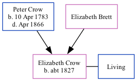

Elizabeth Hewett Grigg (née Crow) c1827 -
[ Home ] | [ Calendar ] | [ Surnames Index ] | [ Family History ]The child of Peter Crow and Elizabeth Brett, Elizabeth Crow, the first cousin five-times-removed on the mother's side of Nigel Horne, was born c. 1827 and baptized in Minster, Thanet, Kent, England on Jun 10, 1827. She married John Grigg there at St Mary The Virgin, on Oct 15, 18471.
Parents
- Peter was born on Apr 10, 1783
Citations
- Kent, Canterbury Archdeaconry marriages 1538-1928 - Findmypast
Media
Canterbury Baptisms Transcription - GBPRS-CANT-B-96509833
England & Wales marriages 1837-2008 Transcription - BMD-M-1847-4-AM-000463-029
Kent, Canterbury Archdeaconry marriages 1538-1928 - GBPRS/CANT/M/97045608/2
Kent, Canterbury Archdeaconry banns 1754-1928 - GBPRS/CANT/M/94062413/2
Family Tree
Generated by Ged2Site. Last updated on Jul 20, 2025